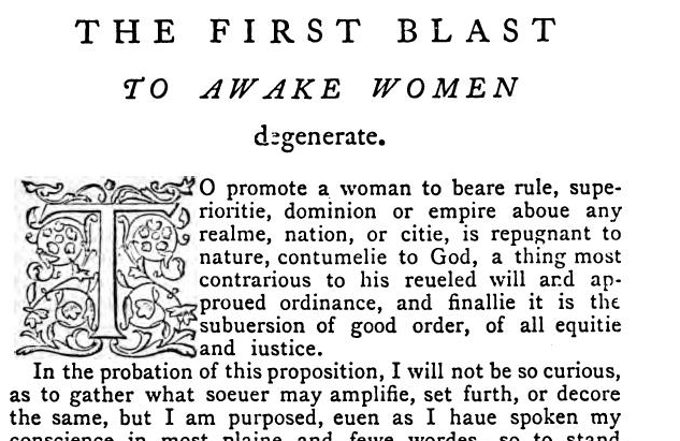

“Repugnant to nature, contumelie to God” (p. 11)
English: Arber’s reprint, p. 11, the first words of the tract, under the heading “The First Blast to awake women degenerate”, scan. Original spelling (u for v, “aboue”). Highlighted: Lecky’s quotation.

To promote a woman to beare rule, superioritie, dominion or empire aboue any realme, nation, or citie, is repugnant to nature, contumelie to God, a thing most contrarious to his reueled will and approued ordinance, and finallie it is the subuersion of good order, of all equitie and iustice.
In the probation of this proposition, I will not be so curious, as to gather what soeuer may amplifie, set furth, or decore the same, but I am purposed, euen as I haue spoken my conscience in most plaine and fewe wordes, so to stand content with a simple proofe of euerie membre, bringing in for my witnesse Goddes ordinance in nature, his plaine will reueled in his worde, and the mindes of such as be moste auncient amongest godlie writers.
And first, where that I affirme the empire of a woman to be a thing repugnant to nature, I meane not onlie that God by the order of his creation hath spoiled woman of authoritie and dominion, but also that man hath seen, proued and pronounced iust causes why that it so shuld be. … For who can denie but it repugneth to nature, that the blind shal be appointed to leade and conduct such as do see? That the weake, the sicke, and impotent persones shall norishe and kepe the hole and strong, and finallie, that the foolishe, madde and phrenetike shal gouerne the discrete …
Apart from the cut, Lecky’s quotation keeps Knox’s spelling, but prints “reveled”, “approved” and “subversion” with v for the original’s u (checked on Lecky’s vol. II, p. 211).
Backlinks
Every place in Rationalism in Europe that links to this page (generated automatically when the site is built).
- Chapter V: note 110